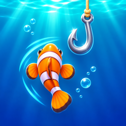

Off the Hook
Privacy Policy · Personvernerklæring
Last updated: 25 November 2026
Short version: Off the Hook does not collect, store or share any personal data. There are no ads, no tracking and no analytics.
Who we are
Off the Hook is an iPhone game made by Knudegaard Apps (org. no. 938 917 523), Eineråsen 21D, 4790 Lillesand, Norway. Contact: our contact form.
Data we collect
None. The game has no user accounts, no ads, no analytics and no third-party tracking tools, and it does not send any data to our servers (we have none).
Data stored on your device
Your game progress (best distance, pearls, fish you own, upgrades, daily missions and settings) is saved only on your own device. It never leaves the device unless you back up your iPhone with iCloud or your computer, which Apple handles. Deleting the app deletes this data.
Game Center
If you are signed in to Apple Game Center, the game sends your best distance to the leaderboard and your achievement progress to Game Center. This is handled entirely by Apple under Apple's Privacy Policy. We never see your Game Center account details. You can turn Game Center off in Settings → Game Center.
In-app purchase
The optional "Full Version" purchase is processed by Apple through the App Store. We never receive your name, payment details or Apple ID. The game only learns whether the purchase is active, so it can unlock the content.
Children
The game is suitable for all ages. Because we collect no personal data from anyone, we also collect none from children.
Your rights
Since we hold no personal data about you, there is nothing for us to access, correct or delete. If you have questions, contact us and we will answer. You may also complain to the Norwegian Data Protection Authority (Datatilsynet).
Changes
If the game changes in a way that affects your privacy, we will update this page and the date above before the update is released.
Sist oppdatert: 25. november 2026
Kort fortalt: Off the Hook samler ikke inn, lagrer eller deler personopplysninger. Ingen reklame, ingen sporing og ingen analyse.
Hvem vi er
Off the Hook er et iPhone-spill laget av Knudegaard Apps (org.nr. 938 917 523), Eineråsen 21D, 4790 Lillesand. Kontakt: kontaktskjemaet vårt.
Hva vi samler inn
Ingenting. Spillet har ingen brukerkontoer, ingen reklame, ingen analyseverktøy og ingen sporing fra tredjeparter, og det sender ingen data til oss (vi har ingen servere).
Data som lagres på enheten din
Fremgangen din (beste distanse, perler, fisker, oppgraderinger, daglige oppdrag og innstillinger) lagres bare på din egen enhet. Den forlater ikke enheten, bortsett fra når du tar sikkerhetskopi av iPhonen til iCloud eller datamaskinen, noe Apple står for. Sletter du appen, slettes disse dataene.
Game Center
Er du logget inn i Apple Game Center, sender spillet beste distanse til topplisten og fremgang på prestasjoner til Game Center. Dette håndteres helt av Apple etter Apples personvernerklæring. Vi ser aldri kontoinformasjonen din. Du kan slå av Game Center under Innstillinger → Game Center.
Kjøp i appen
Kjøpet «Full Version» er valgfritt og behandles av Apple gjennom App Store. Vi får aldri navnet ditt, betalingsinformasjon eller Apple-ID. Spillet får bare vite om kjøpet er aktivt, slik at innholdet kan låses opp.
Barn
Spillet passer for alle aldre. Siden vi ikke samler inn personopplysninger fra noen, samler vi heller ikke inn noe fra barn.
Dine rettigheter
Vi har ingen personopplysninger om deg, så det finnes ingenting å gi innsyn i, rette eller slette. Har du spørsmål, ta kontakt med oss. Du kan også klage til Datatilsynet.
Endringer
Hvis spillet endres på en måte som påvirker personvernet ditt, oppdaterer vi denne siden og datoen over før oppdateringen slippes.